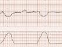

Página 17 · Sofrimento fetal crônico
O desfecho intraparto e a ponte para a cardiotocografia
Doppler alterado não é cesárea automática
Doppler alterado não é cesárea automática. Uma pegadinha de fecho que a banca adora: Doppler alterado / restrição não significa cesárea automática — depende do tipo de alteração. Uma feta centralizada, a termo e em trabalho de parto, pode nascer por via vaginal se aguentar. “Alterou o Doppler, então é cesárea” é conclusão apressada.
DMG não faz restrição — e os fatores que fazem
DMG não faz restrição — e os fatores que fazem. Outra armadilha etiológica: o diabetes gestacional NÃO causa restrição de crescimento — o diabetes prévio, sim. Entre os fatores de insuficiência placentária estão colagenose, diabetes prévio e desnutrição. Não confunda o diabetes que engorda o feto (gestacional, macrossomia) com o que o restringe (prévio, vascular).
Os exames de vigilância do alto risco
Os exames de vigilância do alto risco. No alto risco, o bem-estar fetal é vigiado por um conjunto: ultrassonografia seriada, Doppler (fluxometria/velocimetria), cardiotocografia e perfil biofísico fetal. O Doppler foi o instrumento deste arco; os dois últimos entram agora em cena.
Interativo: toque em cada instrumento para ver o que ele responde.
O Doppler antevê (quão perto do limite o feto está); a cardiotocografia e o perfil biofísico avaliam o feto durante as contrações (aguenta o parto?). Um BCF normal isolado não basta no alto risco.A reavaliação da Terezinha
A reavaliação da Terezinha. Na reavaliação: PA 140/90, FC 86, FR 20, batimento cardíaco fetal 140 bpm; abdômen normotônico — o que afasta descolamento de placenta (fecha o fio aberto na admissão) —; fundo uterino de 29 cm confirmado; atividade uterina de 4 contrações de 40 segundos em 10 minutos. Ao toque: colo com 70% de apagamento, 8 cm de dilatação, apresentação cefálica, plano +1, variedade occípito-púbica (OP) — “o menino já girou”; trabalho de parto evoluindo bem.
A dúvida que resta — aguenta o parto?
A dúvida que resta — aguenta o parto? Aqui está o ponto fino de vigilância: num pré-natal de alto risco, um batimento cardíaco fetal isoladamente normal não basta para tranquilizar. A dúvida que resta é direta: mesmo centralizada, essa criança aguenta o trabalho de parto? A resposta não está no Doppler — está nos exames que avaliam o feto durante as contrações.

No canal superior, a frequência cardíaca fetal cai gradualmente durante cada contração e retorna à linha de base ao fim dela; no inferior, as contrações uterinas. É o padrão da reavaliação da paciente — a imagem-ponte para a leitura completa do traçado.
Open Resources for Nursing (Open RN), Nursing Health Promotion, Fig. 10.34 (NCBI Bookshelf) · fonte / licença: CC BY 4.0
A cardiotocografia com desacelerações e a ponte
A cardiotocografia com desacelerações e a ponte. A cardiotocografia veio com desacelerações da frequência cardíaca fetal a cada contração, com retorno à linha de base logo após o término. A leitura completa desse traçado — variabilidade, tipo de desaceleração, presença de aceleração —, junto do perfil biofísico fetal e do sofrimento fetal agudo, é a continuação direta desta avaliação. O Doppler disse quão perto do limite o feto está; o próximo instrumento dirá se ele suporta nascer. ⏱️
Tabelão da Vitalidade Fetal · entregue à continuação
- Volume de líquido (ILA)Soma dos 4 quadrantes · normal 8–18 · < 5 oligodrâmnio · 5–8 diminuído.aguardando
- Artéria uterina (mãe)Circulação materna · incisura persistente > 24–26 sem = predição.aguardando
- Artéria umbilical (placenta)Baixa resistência < p95 · > p95 → afunda → zero → reversa; conduta por corte de IG.aguardando
- Artéria cerebral média (feto)Alta resistência > p5 · < p5 = centralização (coração, cérebro, suprarrenal).aguardando
- Ducto venoso (coração fetal)Onda A positiva · negativa → parto (antes, sulfato de Mg < 32 sem).aguardando
- CardiotocografiaAvalia o feto durante as contrações — a continuação preenche esta linha.→ aula 2
- Perfil biofísicoCombina a cardiotocografia com parâmetros ultrassonográficos.→ aula 2
Quiz — fixação
Gestante com feto centralizado, a termo, em trabalho de parto bem evoluído (8 cm, OP). Sobre a via de parto, é correto:
- Gabarito A. Depende do tipo de alteração e do estágio; a termo, em bom trabalho de parto, a via vaginal é possível.
- B “sempre cesárea” é a generalização que a página desmonta — a conduta é individualizada.
- C “vaginal proibida” também generaliza indevidamente — centralizada a termo pode nascer por via vaginal.
- D centralização não é, por si, indicação de parto imediato como a onda A negativa ou a reversa; aqui se avalia a tolerância ao trabalho de parto.
Qual afirmação sobre etiologia da restrição está correta?
- Gabarito A. DMG não restringe (tende à macrossomia); o prévio, vascular, sim.
- B inverte — o gestacional não é causa de restrição.
- C o diabetes prévio claramente se associa.
- D a desnutrição é fator de insuficiência placentária, não proteção.
Feto de alto risco com batimento cardíaco fetal isoladamente normal. Isso é suficiente para tranquilizar?
- Gabarito A. BCF normal isolado não tranquiliza no alto risco; entram CTG e PBF.
- B um dado pontual não avalia a resposta às contrações.
- C Doppler alterado só reforça a preocupação — não valida o BCF.
- D o Doppler não substitui a CTG; são complementares (o Doppler antevê, a CTG avalia durante o parto).